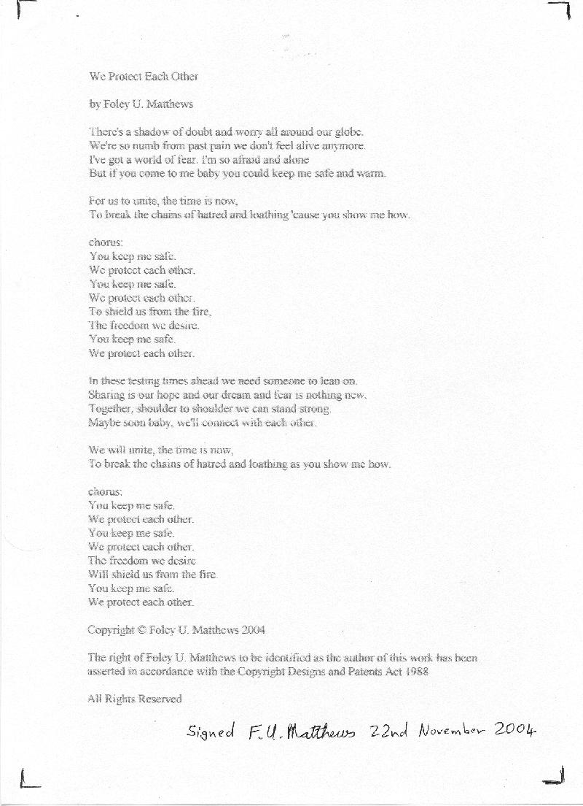

You can contact me via this link if you are wise enough, or you can find me in the telephone directory in the state of Queensland in the nation of Australia.
It is a message of hope that the whole world can find peace and freedom. Let's go from being "post war" as in any particular war or terror, to "post war for all wars."
Here you are able to download an mp3 of me, er, performing the piece (borrowing the E. Foley, F. Goodman tune). Be warned, if you thought William Shatner's singing was bad, then this is probably worse than that.
by Foley U. Matthews
There's a shadow of doubt and worry all around our globe.
We're so numb from past pain we don't feel alive anymore.
I've got a world of fear. I'm so afraid and alone
But if you come to me baby you could keep me safe and warm.
For us to unite, the time is now,
To break the chains of hatred and loathing 'cause you show me how.
chorus:
You keep me safe.
We protect each other.
You keep me safe.
We protect each other.
To shield us from the fire,
The freedom we desire.
You keep me safe.
We protect each other.
In these testing times ahead we need someone to lean on.
Sharing is our hope and our dream, and fear is nothing new.
Together, shoulder to shoulder we can stand strong.
Maybe soon baby, we'll connect with each other.
We will unite, the time is now,
To break the chains of hatred and loathing as you show me how.
chorus:
You keep me safe.
We protect each other.
You keep me safe.
We protect each other.
The freedom we desire
Will shield us from the fire.
You keep me safe.
We protect each other.
Copyright © Foley U. Matthews 2004
The right of Foley U. Matthews to be identified as the author of this work has been asserted in accordance with the Copyright Designs and Patents Act 1988
All Rights Reserved

Web page Copyright © Foley U. Matthews 2004.